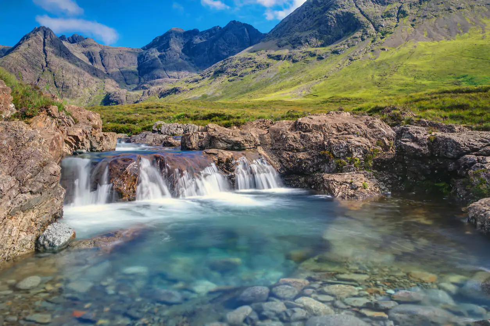
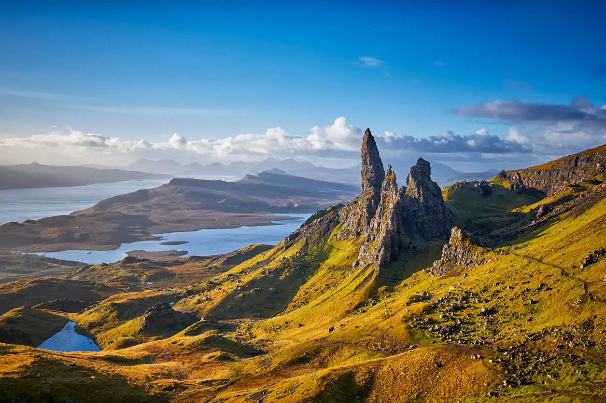

This is the Isle of Skye


The island has been occupied since the Mesolithic period, and over its
history has been occupied at various times by Celtic tribes including the
Picts and the Gaels, Scandinavian Vikings, and most notably the powerful
integrated Norse-Gaels clans of MacLeod and MacDonald. The island was
considered to be under Norwegian suzerainty until the 1266 Treaty of
Perth, which transferred control over to Scotland.
The island has been occupied since the Mesolithic period, and over its
history has been occupied at various times by Celtic tribes including the
Picts and the Gaels, Scandinavian Vikings, and most notably the powerful
integrated Norse-Gaels clans of MacLeod and MacDonald. The island was
considered to be under Norwegian suzerainty until the 1266 Treaty of
Perth, which transferred control over to Scotland.
The main industries are tourism, agriculture, fishing, and forestry. Skye
is part of the Highland Council local government area and wholly within
the historic county of Inverness-shire. The island's largest settlement is
Portree, which is also its capital, known for its picturesque harbour.
Links to various nearby islands by ferry are available, and since 1995, to
the mainland by a road bridge. The climate is mild, wet, and windy. The
abundant wildlife includes the golden eagle, red deer, and Atlantic
salmon. The local flora is dominated by heather moor, and nationally
important invertebrate populations live on the surrounding sea bed. Skye
has provided the locations for various novels and feature films and is
celebrated in poetry and song.
History
A Mesolithic hunter-gatherer site dating to the seventh millennium BC at
An Corran in Staffin is one of the oldest archaeological sites in
Scotland. Its occupation is probably linked to that of the rock shelter at
Sand, Applecross, on the mainland coast of Wester Ross, where tools made
of a mudstone from An Corran have been found. Surveys of the area between
the two shores of the Inner Sound and Sound of Raasay have revealed 33
sites with potentially Mesolithic deposits. Finds of bloodstone microliths
on the foreshore at Orbost on the west coast of the island near Dunvegan
also suggest Mesolithic occupation. These tools probably originated from
the nearby island of Rùm. Similarly, bloodstone from Rum, and baked
mudstone, from the Staffin area, were found at the Mesolithic site of
Camas Daraich, also from the seventh millennium BC, on the Point of Sleat,
which has led archaeologists to believe that Mesolithic people on Skye
would travel fairly significant distances, at least 70 km, both by land
and sea.
Rubha an Dùnain, an uninhabited peninsula to the south of the Cuillin, has
a variety of archaeological sites dating from the Neolithic onwards. A
second- or third-millennium BC chambered cairn, an Iron Age promontory
fort, and the remains of another prehistoric settlement dating from the
Bronze Age are nearby. Loch na h-Airde on the peninsula is linked to the
sea by an artificial "Viking" canal that may date from the later period of
Norse settlement. Dun Ringill is a ruined Iron Age hill fort on the
Strathaird Peninsula, which was further fortified in the Middle Ages and
may have become the seat of Clan MacKinnon.
The late Iron Age inhabitants of the northern and western Hebrides were
probably Pictish, although the historical record is sparse. Three Pictish
symbol stones have been found on Skye and a fourth on Raasay. More is
known of the kingdom of Dál Riata to the south; Adomnán's life of Columba,
written shortly before 697, portrays the saint visiting Skye (where he
baptised a pagan leader using an interpreter) and Adomnán himself is
thought to have been familiar with the island.[62] The Irish annals record
several events on Skye in the later seventh and early eighth centuries
mainly concerning the struggles between rival dynasties that formed the
background to the Old Irish language romance Scéla Cano meic Gartnáin.
Legendary hero Cú Chulainn is said to have trained on the Isle of Skye
with warrior woman Scáthach.
The Norse held sway throughout the Hebrides from the 9th century until
after the Treaty of Perth in 1266. However, apart from placenames, little
remains of their presence on Skye in the written or archaeological record.
Apart from the name "Skye" itself, all pre-Norse placenames seem to have
been obliterated by the Scandinavian settlers. Viking heritage, with
Celtic heritage is claimed by Clan MacLeod. Norse tradition is celebrated
in the winter fire festival at Dunvegan, during which a replica Viking
longboat is set alight.
Geography
At 1,656 km 2 (639 sq mi), Skye is the second-largest island in Scotland
after Lewis and Harris. The coastline of Skye is a series of peninsulas
and bays radiating out from a centre dominated by the Cuillin hills
(Gaelic: An Cuiltheann). Malcolm Slesser suggested that its shape "sticks
out of the west coast of northern Scotland like a lobster's claw ready to
snap at the fishbone of Harris and Lewis" and W. H. Murray, commenting on
its irregular coastline, stated, "Skye is 60 miles [100 km] long, but what
might be its breadth is beyond the ingenuity of man to state". Martin
Martin, a native of the island, reported on it at length in a 1703
publication.
The Black Cuillin, which are mainly composed of basalt and gabbro, include
12 Munros and provide some of the most dramatic and challenging mountain
terrain in Scotland. The ascent of Sgùrr a' Ghreadaidh is one of the
longest rock climbs in Britain and the Inaccessible Pinnacle is the only
peak in Scotland that requires technical climbing skills to reach the
summit. Nearby Sgùrr Alasdair, meanwhile, is the tallest mountain on any
Scottish island. These hills make demands of the hill walker that exceed
any others found in Scotland and a full traverse of the Cuillin ridge may
take 15 to 20 hours. The Red Hills (Gaelic: Am Binnean Dearg) to the east
are also known as the Red Cuillin. They are mainly composed of granite
that has weathered into more rounded hills with many long scree slopes on
their flanks. The highest point of these hills is Glamaig, one of only two
Corbetts on Skye.
The northern peninsula of Trotternish is underlain by basalt, which
provides relatively rich soils and a variety of unusual rock features. The
Kilt Rock is named after the columnar structure of the 105-metre (344 ft)
cliffs, said to resemble the pleats in a kilt. The Quiraing is a
spectacular series of rock pinnacles on the eastern side of the main spine
of the peninsula and further south is the rock pillar of the Old Man of
Storr. The view of the Quiraing and the Old Man of Storr is one of the
most iconic in all of Scotland and is frequently used on calendars and
tourism guides and brochures.
Beyond Loch Snizort to the west of Trotternish is the Waternish peninsula,
which ends in Ardmore Point's double rock arch. Duirinish peninsula is
separated from Waternish by Loch Dunvegan, which contains the island of
Isay. It is ringed by sea cliffs that reach 296 metres (971 feet) on the
west at Waterstein Head and on the northwest at Biod an Athair where, a
metre from the summit trig pillar, the cliffs drop 1,029 feet (314 metres)
to the ocean. Oolitic loam provides good arable land in the main valley.
Lochs Bracadale and Harport and the island of Wiay lie between Duirinish
and Minginish, which includes the narrower defiles of Talisker and Glen
Brittle and whose beaches are formed from black basaltic sands. Strathaird
is a relatively small peninsula close to the Cuillin hills with only a few
crofting communities, the island of Soay lies offshore. The bedrock of
Sleat in the south is Torridonian sandstone, which produces poor soils and
boggy ground, although its lower elevations and relatively sheltered
eastern shores enable a lush growth of hedgerows and crops. The islands of
Raasay, Rona, Scalpay and Pabay all lie to the north and east between Skye
and the mainland.